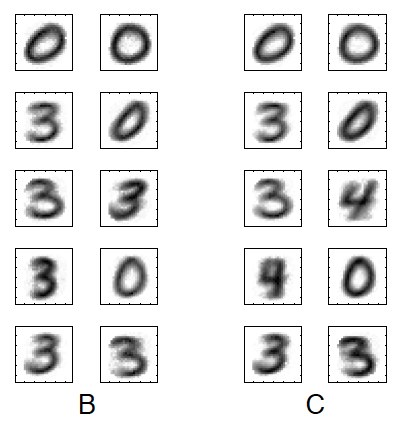

Week 12: neurons, II
Lecture 12.2: spike timing

what neurons do: keep track of, and act upon, precise timing of spikes
-
Timing in COINCIDENCE DETECTION: as in the
barn owl sound localization circuit (week 2); also in
readout (week 11).
-
Timing in learning: as in Spike Timing-Dependent Plasticity
(STDP).
-
Hebb/BCM is a function-level account of learning through
synaptic modification;
-
STDP completes the picture by offering a step-by-step
analysis and model of the contribution of spiking activity
to synaptic modification.
learning from experience through synaptic modification
Learning from experience at the level of the synapse:
— modification of synaptic
weight through Spike Timing-Dependent Plasticity
(STDP).
\(w_{ij}\): the weight of the synapse between the presynaptic neuron \(j\)
and the postsynaptic neuron \(i\).
\(\frac{\Delta w_{ij}}{w_{ij}}\): normalized change in the value of the
synaptic weight.
The abscissa of the plot shows the time difference between the
pre- and post-synaptic spikes, \(\Delta t = t_{j}^{pre} -
t_{i}^{post}\), in milliseconds. Circles are actual data points
from a recording, to which a curve was fitted. Note that the curve
is sharply discontinuous at \(\Delta t = 0\).
molecular basis of STDP (from Natalia Caporale & Yang Dan, 2008)

A schematic representation of the molecular signaling pathways
involved in STDP induction.
In LTP induction (right), the NMDA receptors act as coincidence
detectors for pre- and postsynaptic spiking. In LTD induction
(left) the coincidence detector may vary across synapses.
The diagram includes several pathways that have been suggested
to play a role in LTD. Red oval indicates possible coincidence
detectors. Arrow indicates activation/potentiation. Blunt-ended
line indicates inhibition/suppression. Abbreviations:
eCB, endocannabinoids; ER, endoplasmic reticulum; Glu,
glutamate; IP3, inositol 1,4,5-triphosphate; PLC, phospholipase
C; VDCCs, voltage-dependent Ca2+ channels.
(a mathematical formalization of) the STDP rule

(If you're unfamiliar with the
Dirac \(\delta\) notation or with differential
equations, use the illustration and the boldface text below.)
Each presynaptic spike arrival leaves a trace \(x_j(t)\) which is updated by an
amount \(a_{+}(x_j)\) at the moment of spike arrival and decays exponentially in
the absence of spikes:
$$
\tau_{+}\frac{dx_j}{dt} = -x_j + a_{+}(x_j) \sum_f \delta\left(t -
t_j^f\right)
$$
Similarly, each postsynaptic spike leaves a trace \(y\)
$$
\tau_{-}\frac{dy}{dt} = -y + a_{-} \sum_n \delta\left(t - t^n\right)
$$
which increases by \(a_{−}(y)\) at the moment of postsynaptic
spikes. The weight change is then
$$
\frac{dw_j}{dt} = A_{+}\left(w_j\right) x\left(t\right) \sum_n
\delta\left(t-t^n\right) - A_{-}\left(w_j\right) y\left(t\right) \sum_f
\delta\left(t-t_j^f\right)
$$
Thus, the weight is (1) increased at the moment of a
postsynaptic spike by an amount that depends on the value of the
trace \(x\) left by the presynaptic spike, and (2) decreased at
the moment of presynaptic spike by an amount proportional to the
trace \(y\) left by previous postsynaptic spikes.
STDP and Hebbian learning rules
STDP can be seen as a spike-based formulation of Hebbian learning:
in a sense, it is "Hebb, done right".
Hebb (1949) proposed that a synapse should be strengthened if a
presynaptic neuron 'repeatedly or persistently takes part in
firing' the postsynaptic one. This formulation suggests a
potential causal relation between the firing of the
two neurons. Causality requires that the presynaptic neuron fires
slightly before the postsynaptic one. Hebb did not, however,
postulate the existence of synaptic weakening. The anti-Hebbian
(weakening) component is found in Oja and BCM rules.
STDP versus firing rate-based learning rules
Under the assumption of stationary
Poisson statistics for the firing times of pre-
and postsynaptic neurons, the most relevant aspect of the STPD
function from slide 5 is its integral and an STDP model can
mapped to an equivalent rate-based learning rule.*
Another point to note: for standard STDP models,
random pairings of pre- and postsynaptic firings lead to a weakening
of the
synapse.
*
Assuming independence between pre- and postsynaptic firing,
the total weight change is \(\Delta w_{ij} = \alpha f_i(t)
f_j(t)\) where \(f_j(t)\) and \(f_i(t)\) denote the firing
rate of pre- and postsynaptic neurons averaged over some
time \(T\) and \(\alpha = \int W(s)ds\) is the integral over
the learning window. If the integral is positive, STDP is
identical to standard rate-based Hebbian learning. For
negative integral, as often used in modeling, STDP
corresponds to a anti-Hebbian rate rule.
However, the assumption of independence of pre- and
postsynaptic firing is obviously wrong: it neglects the
causal correlations generated by the interaction of the two
neurons. A more precise mapping to rate models can be
achieved if the postsynaptic neuron is described as an
inhomogeneous Poisson Process with a rate \(f_i(t) = \gamma
\sum_j \sum_f \epsilon(t−t^f_j)\) where \(t^f_j\) denotes
the spike times of a presynaptic neuron \(j\) generated by a
Poisson process of rate \(f_j(t)\) and \(\epsilon(s)\) for
\(s>0\) describes the time course of a postsynaptic
potential. The total weight change in a period \(T\) is then
\(\Delta w_{ij} = \alpha f_i(t)f_j(t) + \beta f_j(t)\) where
\(\beta = \gamma \int_{0}^{\infty} \epsilon(s)W(s)ds\) is
the integral over the 'causal' part of the learning window,
i.e., over all times with 'pre-before-post' relation.
time-dependent plasticity and the time scale of reward (Izhikevich, 2007)
In
Pavlovian or classical and
instrumental or operant conditioning, reward
typically comes seconds after reward-triggering actions,
creating the distal reward problem [a.k.a. the Credit
Assignment Problem from
Lecture 7.2]: How does the brain
know what firing patterns of what neurons are responsible for
the reward if 1) the patterns are no longer there when the
reward arrives and 2) all neurons and synapses are active
during the waiting period to the reward?
The conundrum can be resolved by combining spike-timing-dependent
plasticity (STDP) with modulation by
dopamine (DA). Although STDP is triggered by
nearly coincident firing patterns on a millisecond timescale,
slow kinetics of subsequent synaptic plasticity is sensitive to
changes in the extracellular DA concentration during the
critical period of a few seconds.
E. Izhikevich (2007). Solving the Distal Reward
Problem through Linkage of STDP and Dopamine
Signaling. Cerebral Cortex 17:2443-2452.
time-dependent plasticity and the time scale of reward (Izhikevich, 2007)
Instrumental conditioning of a synapse.
(a) The dynamics of each synapse is described by synapse strength
\(s\) and
eligibility trace \(c\), which are gated by
the extracellular DA \(d\). Firings of the pre- and
postsynaptic neurons induce changes to the variable \(c\)
according to the STDP rule, shown in (b). These changes
result in modification of the synaptic strength \(s\) only
when extracellular DA is present (\(d>0\)) during the
critical window of a few seconds while the eligibility trace
c decays to zero.
(c) The magnification of the region in (d) marked by *. To
reinforce coincident firings of 2 coupled neurons, a reward
(step-increase of variable \(d\)) is delivered with a random delay
(between 1 and 3 s) each time a postsynaptic firing occurs within
10 ms after a presynaptic firing (marked by a rectangle in
(c)). This increases \(c\) more than any random firings of the
same neurons during the delayed period.
(d) Consistent rewarding of each such event results in the gradual
increase of synaptic strength, \(s\), which increases the
probability of coincident firings and brings even more reward (the
rich get richer).
associating an event with a place: learning in hippocampus place cells
Hippocampal
CA1 place fields can be produced in vivo in a
single trial by potentiation of input that arrived seconds before and
after
complex spike bursts (F, left)... How???
(A) Mouse on linear track (top), Gaussian functions representing
place-field firing in the
CA3
neurons (green), the to-be-determined
plasticity rule that controls the synaptic weights of CA3 inputs
(gray), Gaussian functions representing CA3 excitatory input
weighted by above rule (black), and the resulting \(V_m\)
[membrane potential] ramp in CA1
neuron (blue). Red bar indicates plateau potential.
(B) Activity of CA3 population versus time during induction
trial.
(C) Synaptic weight values as a function of time from plateau
(plasticity rule) inferred from the data (black) and standard [STDP] rule
(red) for comparison. ampl., amplitude; a.u., arbitrary units.
Behavioral time scale synaptic plasticity underlies CA1
place fields. Katie C. Bittner et al. Science 357,
1033–1036 (2017).
hippocampus place cell learning: "behavioral time-dependent plasticity"

Plot of postinduction
EPSP amplitude normalized to baseline versus the
induction interval time for the entire population of
neurons. Open gray symbols are individual neurons; black
symbols are means. \(\tau_b\) (tau backward) from exponential
fit of data ranging from 0 to –3250 ms (red line projecting to
negative times). \(\tau_f\) (tau forward) from exponential fit
of data ranging from 0 to +2000 ms (red line projecting to
positive times).
"This time course allows inputs that were neither directly causal
nor even temporally contiguous with postsynaptic activation
(either APs or plateau potentials) to become potentiated, and the
magnitude of this potentiation permits this to occur without
substantial repetition. The time course also produces \(V_m\)
depolarizations that have a PREDICTIVE quality, in that they peak
and have a center of mass well before the actual induction [time
and] location."
Behavioral time scale synaptic plasticity underlies CA1
place fields. Katie C. Bittner et al. Science 357,
1033–1036 (2017).
STDP and the Bienenstock-Cooper-Munro (BCM) rule
STDP can also be related to a nonlinear rate model where the
weight change depends linearly on the presynaptic rate, but
nonlinearly on the postsynaptic rate (Bienenstock et al.,
1982). This can be achieved in two different ways.
The first possibility (described on the next slide) is to allow only the
nearest-neighbor spikes to have a joint effect (instead of all-to-all
spike coupling, as suggested above). This leads to
a nonlinearity consistent with the BCM rule.
For the second possibility, see the
Scholarpedia article
on STDP.
more on STDP and the Bienenstock-Cooper-Munro (BCM) rule
(A) The STDP curve.
(B) Function controlling synaptic plasticity at the Cooper synapse
receiving 20 Hz presynaptic stimulation.
(C) All-to-all implementation of STDP: the net synaptic change is
a combination of small changes induced by all possible pre- and
postsynaptic pairs.
(D) The result of application of STDP rule to
Poisson spike
trains.
(E) The nearest-neighbor implementation of STDP. For each
presynaptic spike, only one preceding andone succeeding
postsynaptic spike are considered.
(F) The resulting BCM function. Parameters are as in Figure 1A.
Relating STDP to BCM. Eugene M. Izhikevich and Niraj
S. Desai. Neural Computation 15, 1511–1523 (2003).
[EXTRA] STDP applied to handwritten digit recognition (W. Maass et al., 2009)
\(28\times 28\) pixel values \(x_j\) were encoded through population
coding by binary variables \(y_i\).
Pixels were binarized to black/white. All pixels that were black in less
than 5% of the training examples were removed, leaving \(m = 429\)
external variables \(x_j\) that were encoded by \(n = 858\) spiking neurons
\(y_i\). Spikes were produced for each variable \(y_i\) by a
Poisson process with a rate of 40 Hz for \(y_i = 1\), and 0 Hz for \(y_i =
0\), at a simulation time step of \(1ms\). Every training example x was
presented for \(50ms\). Every neuron \(y_i\) was connected to all \(K =
10\) output neurons \(z_1, \ldots, z_{10}\).
A Poisson process caused firing of one of the neurons \(z_k\) on average
every \(5ms\).
The Winner-Take-All (WTA) mechanism ensured that only one of the output neurons could fire
at any time step. The winning neuron at time step \(t\) was chosen by a
soft-max step.
[Specifically,
$$
p(z_k~\textrm{fires at time}~t\mid y) =
\frac{e^{u_k\left(t\right)}}{\sum_{l=1}^{K} e^{u_l\left(t\right)}}
$$
where \(u_k(t) = \sum_{i=1}^n w_{ki}\tilde{y}_i(t) + w_{k0}\) represents
the current membrane potential of neuron \(z_k\) (with \(\tilde{y}_i(t) =
1\) if \(y_i\) fired within the time interval \([t-10ms,t]\), else
\(\tilde{y}_i(t)=0\)).]
[EXTRA] STDP in digit recognition (cont.)
Learning curve for the two STDP rules that were used (with
\(\sigma = 10ms\)). The synaptic weight \(w_{ki}\) is changed in
dependence of the firing times \(t_{pre}\) of the presynaptic
neuron \(y_i\) and \(t_{post}\) of the postsynaptic neuron
\(z_k\). If \(z_k\) fires at time \(t\) without a firing of
\(y_i\) in the interval \([t − \sigma, t + 2\sigma]\), \(w_{ki}\)
is reduced by 1. The resulting weight change is in any case
multiplied with the current learning rate \(\eta\),
which was chosen in the simulations according to the variance tracking
rule.
<.P>
[EXTRA] STDP in digit recognition (cont.)
Unsupervised classification learning and sparsification of firing of output
neurons after training. For testing we presented three examples from an
independent test set of handwritten digits 0, 3, 4 from the
MNIST dataset,
and compared the firing of the output-neurons before and after
learning.
(A) Representation of the three handwritten digits 0, 3, 4 for
\(50~ms\) each (\(150~ms\) total) by the 858 spiking neurons
\(y_i\).
(B) Responses of the 10 output neurons before training.
(C) Responses of the 10 output neurons after STDP. The three output
neurons \(z_4, z_9, z_6\) that respond have generated internal
models for the three shown handwritten digits according to the figure in
the next slide.
[EXTRA] STDP in digit recognition (cont.)

(B) The implicit internal models created by the neurons after 2000
training examples are revealed by presenting their learned weights as input
templates. Clearly, neurons created separate internal models
for different ways of writing the two digits 0 and 3.
(C) Re-organized internal models after 2000 further training
examples that included digit 4. Two output neurons had created internal
models for the newly introduced digit 4.
When tested on sets of 10,000 new samples each, the network achieved a
classification error of 2.19% on the digits 0 and 3 after 2000 training
steps and 3.68% on all three digits after 4000 training steps.
summary: STDP and the discovery of the causal structure of the world

Modeling the world requires causal knowledge:
Felix, qui potuit rerum cognoscere causas
(recall Lecture 9.1).
STDP does that on the level of individual synapses, by
distinguishing pre-before-post from post-before-pre situations
(unlike rate-based rules, such as Hebb, which are correlational).
Ultimately, one must determine which world events cause other
events. Note that this undertaking — model-based reinforcement
learning — must also be implemented with STDP and eligibility
trace mechanisms, because that is all that the brain has at its
disposal.